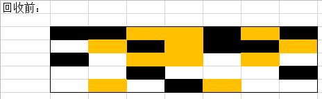
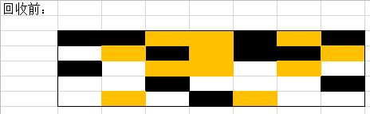

黑色为需要清理的，黄色为存活的，空白为可用空间

在清理完后会变成这样：

也就是把黑色部分直接释放掉，不对其他的空间进行操作。
| 创建时间： | 2020/1/19 10:18 |
| 更新时间： | 2020/4/3 20:31 |
| 作者： | lzr |
Java语言有一个重要特性就是自动的垃圾回收，自动垃圾回收可以使得我们不用再像c/c++中疲于手动管理内存
那自动垃圾回收是如何工作的呢？
很多老师讲课、网上的视频和培训班只会讲一些很基础的概念，而不会对GC进行深入的讲解。
本文参考周志明老师作的《深入理解java虚拟机》第二版。
文中描述仅针对jdk8之前有效。
所谓的“垃圾”，其实就是指内存中已经“死”掉的对象，“死掉的”对象不会再经过任何途径被使用。
比如一些临时的对象，它创建完成后可能只使用一两次就再也不会被使用。
GC要做的工作，就是把这些已死的对象清理掉。
那如何判断一个对象已死呢？
public class Main {
Main anomain;
public static void main(String[] args) {
Main m1 = new Main();
Main m2 = new Main();
m1.anomain = m2;
m2.anomain = m1;
m1 = null;
m2 = null;
}
}
这样的情况下，m1 和 m2 互相引用，使用引用计数法就无法正常回收这部分内存了。
我们所熟知的引用一般为这种String s = new String();
在这种引用里，只要s还在生命周期内，s指向的String对象就不会被回收。
但是这一种引用有一个后果就是，如何描述一些可存在可不存在，或者说没那么重要的对象时，就会很无力。jdk为我们提供了其他的方式来描述这些对象：
在finalize方法中，对象可以把自己挂到别的指针的引用上，可以实现一次自救。
但是finallize方法是一种不被推荐的使用方式。在接下来几天的文章中我会解释。
一些人也喜欢把方法区叫做永久代，java虚拟机规范中也说方法区可以不进行垃圾收集，因为对方法区进行GC的性价比可能不高。
方法区的垃圾主要有废弃常量和无用的类。
这个时候虚拟机就可以对这些常量和无用的类进行回收。
学习过spring框架的都知道，spring大量使用反射，动态代理机制。在这种情况下会产生很多无用的类。因此对方法区的回收还是有必要的。
这种算法会把需要清理的对象标记，如下图所示
黑色为需要清理的，黄色为存活的，空白为可用空间

在清理完后会变成这样：
也就是把黑色部分直接释放掉，不对其他的空间进行操作。
但是这样就会导致两个问题：
为了解决效率问题，采用这种算法可以显著改善。
如下图所示：
左侧是回收前，右侧是回收后的。这种算法把内存分成两份，每次清理的时候，把左侧的存活对象复制到右侧，此时左侧全都为空的空间。下一次则把右侧的复制到左边来。
复制收集算法在对象存活率高的时候效率会很低，更关键的是，复制算法会直接浪费50%的空间，如果不想浪费这么多，就需要额外的空间进行担保，用来应对大量对象存活的极端情况。
根据老年代的特点，有人提出了“标记——整理”算法。标记过程和标记——清除法类似，但是后续直接把可用的对象向一侧挪动，然后直接清理掉边界之外的全部内存。
如下图所示：
当前商用VM都采用分代收集的方式，其中一个非常典型的分代方式如图所示：
一定有人听过这个词，但是这个是什么意思呢？
实际上GC和妈妈打扫房间一样。假设一个场景，你是一只哈士奇，你在房间里不停地咬卫生纸，撕的满地纸屑。主人打扫的时候肯定会把你抓起来再打扫，而不是你一边生产垃圾，主人一边扫地。
在GC中也是一样。在可达性分析的过程中，如果某个对象突然变成垃圾，或者突然创建了一些对象，垃圾收集器就需要费很大的力气一直计算。
所以在垃圾收集的过程中，最好有这种情况出现。因此GC的时候需要停止一切能对对象引用状态产生影响的线程。
这个过程称为STW（stop
the
world）
这个过程怎么实现呢？当垃圾收集器开始工作的时候，所有线程必须到达一个安全的地方，这个点被称为safepoint，即此时开始收集垃圾是安全的。安全点的选择基本上是以程序“是否具有让程序长时间执行的特征”为标准而选定的，最明显的例子就是指令序列复用，例如方法调用，循环跳转，这些地方才会产生safepoint。
但是GC发生时，不可能所有的线程都刚好到safepoint。一种办法是先把所有线程停掉，然后把需要运行的线程运行到safepoint。
另外一种方法则是，在需要gc的时候设置一个标志，各个线程执行的时候检测到这个标志，自己把自己中断挂起。
但是有些线程在不执行的时候，比如处于sleep状态或block状态的时候，它是无法响应cpu的指令的，总不能一直等到这些线程恢复再进场GC。这时候可以通safe region（安全区域）来实现。当一个线程运行到一个不会对对象的引用关系造成影响的地方时，在这个区域内的任何时候GC都是安全的。JVM进行GC的时候，发现某个线程在安全区域内，就不用理会这个线程的状态。
到此，简单介绍了jvm垃圾收集的一些原理和方法，但是实际上还停留在理论阶段。商用jvm使用了很多种垃圾收集器。包括如何对垃圾收集进行优化，这些都还没有涉及。预计下周六可以更新出来。